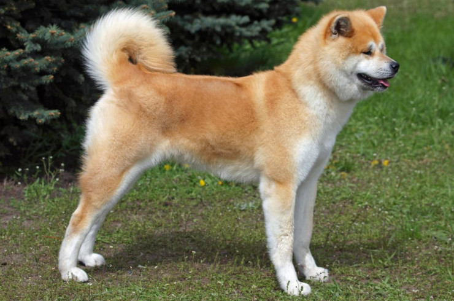
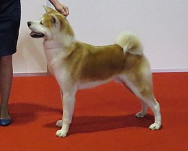
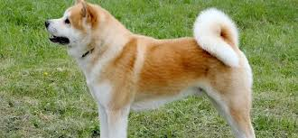
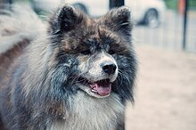

Акита-ину


Акита-ину (яп. 秋田犬) или японская собака акита — порода собак, появившаяся в провинции Акита на японском острове Хонсю, одна из шести в регистре японской кинологической организации по защите и сохранению исконно японских пород — Нихонкэн Ходзонкай (Nippo). Акита-ину является крупнейшей японской собакой из шпицеобразных. Долгое время использовалась для охоты в основном на крупных зверей, таких как кабан, олень и медведь. В далёком прошлом акит, которых брали на охоту, называли матаги кэн (яп. マタギ犬, «собака-охотник на крупного зверя»). Слово «матаги» на древнем японском языке означает «охотник на крупного зверя», также правильным будет перевод «медвежатник». Слово «кэн» так же, как и слово «ину», означает «собака», но в отличие от «ину» слово «кэн» не может быть использовано отдельно, а только в словосочетании, например «матаги кэн». Именно поэтому люди-охотники (матаги) своих собак называли «матаги кэн».


Акита возникла в районе Одате префектуры Акита, в северо-восточной части главного японского острова и была выведена как охотничья и сторожевая собака. В прошлом порода была также известна как одате-ину и кадзуно-ину — по названию местностей происхождения. Кроме того, такие собаки были обнаружены в граничащих с Акитой префектурах Аомори и Иватэ, характеризующихся такими же суровыми зимами.
Данные археологических исследований, в результате которых были обнаружены останки шпицеобразных собак, датирующиеся примерно II тысячелетием до нашей эры, и результаты генетических исследований показали, что акита является одной из 14 древнейших пород собак. Помимо всего прочего, сохранились древние рисунки с изображением собак, напоминающих современных акит.
Для сохранения и развития охотничьих качеств в Японии в VI веке были основаны клубы любителей этих собак. Они составляли инструкции по содержанию, разведению, обучению. В XV веке были учреждены племенные книги, в которых записывались кличка, происхождение, окрас и другие сведения.
Первоначально японские собаки имели небольшие или средние размеры. С 1603 года в округе Акита для собачьих боёв использовались акита матаги. С 1868 года их скрещивали с тоса-ину и мастифами, в результате чего размеры собак увеличились, но были потеряны характерные для шпицеобразного типа черты.
Несмотря на то, что в 1908 году собачьи бои были запрещены, порода сохранилась и улучшилась, став японской породой крупных собак, а девять её выдающихся представителей в 1931 году были названы «Памятниками природы».
Во время Второй мировой войны использовали чаще немецких овчарок, владельцы акита стали скрещивать их с немецкими овчарками. После Второй мировой войны порода разделилась на три типа: акита матаги; бойцовая акита; акита, скрещённая с немецкой овчаркой. В США на основе акиты была выведена американская акита. Считается, что в Америку первых японских акита привезла Хелен Адамс Келлер.
Данные археологических исследований, в результате которых были обнаружены останки шпицеобразных собак, датирующиеся примерно II тысячелетием до нашей эры, и результаты генетических исследований показали, что акита является одной из 14 древнейших пород собак. Помимо всего прочего, сохранились древние рисунки с изображением собак, напоминающих современных акит.
Для сохранения и развития охотничьих качеств в Японии в VI веке были основаны клубы любителей этих собак. Они составляли инструкции по содержанию, разведению, обучению. В XV веке были учреждены племенные книги, в которых записывались кличка, происхождение, окрас и другие сведения.
Первоначально японские собаки имели небольшие или средние размеры. С 1603 года в округе Акита для собачьих боёв использовались акита матаги. С 1868 года их скрещивали с тоса-ину и мастифами, в результате чего размеры собак увеличились, но были потеряны характерные для шпицеобразного типа черты.
Несмотря на то, что в 1908 году собачьи бои были запрещены, порода сохранилась и улучшилась, став японской породой крупных собак, а девять её выдающихся представителей в 1931 году были названы «Памятниками природы».
Во время Второй мировой войны использовали чаще немецких овчарок, владельцы акита стали скрещивать их с немецкими овчарками. После Второй мировой войны порода разделилась на три типа: акита матаги; бойцовая акита; акита, скрещённая с немецкой овчаркой. В США на основе акиты была выведена американская акита. Считается, что в Америку первых японских акита привезла Хелен Адамс Келлер.
Японская акита — крупная шпицеобразная порода собак, выведенная в горных районах северной Японии как полуфункциональная охотничья порода. Японцы называют эту собаку «сокровище Японии». Высота в холке кобелей составляет 67 см, сук — 61 см, допускается отклонение ± 3 см. Вес — от 40—50 кг.
Шёрстный покров собаки породы акита стандарт FCI и стандарт АКИХО характеризуют следующим образом: Остевой волос жёсткий и прямой, подшёрсток густой и мягкий. Шерсть на лопатках и «штанах» немного длиннее, чем на других частях тела. Самая длинная шерсть на хвосте. Шерсть акиты должна состоять из трёх слоёв. Наиболее длинные волосы составляют верхний, наиболее грубый слой шерсти. Есть также жёсткий, но более короткий слой шерсти, и мягкий подшёрсток. Чтобы шерсть была правильной, все три слоя должны быть в наличии. Структура шерсти вносит значительный вклад во внешний вид и очень сильно влияет на впечатление, производимое собакой. Большое влияние на внешний облик собаки оказывает длина шерсти. Есть представители породы, имеющие более короткую шерсть, а есть обладатели более длинного шёрстного покрова. В любом из этих случаев, шёрстный покров соответствует стандартам, за исключением очень длинной и слишком короткой шерсти.
Окрас рыже-палевый, сезам (рыже-палевые волосы с чёрными кончиками), тигровый и белый. При всех окрасах, кроме белого, собака должна иметь «урадзиро» — белёсую шерсть на боковых частях морды, скулах, нижней поверхности челюсти, шее, груди, корпусе и хвосте, а также на внутренних поверхностях конечностей.
Шёрстный покров собаки породы акита стандарт FCI и стандарт АКИХО характеризуют следующим образом: Остевой волос жёсткий и прямой, подшёрсток густой и мягкий. Шерсть на лопатках и «штанах» немного длиннее, чем на других частях тела. Самая длинная шерсть на хвосте. Шерсть акиты должна состоять из трёх слоёв. Наиболее длинные волосы составляют верхний, наиболее грубый слой шерсти. Есть также жёсткий, но более короткий слой шерсти, и мягкий подшёрсток. Чтобы шерсть была правильной, все три слоя должны быть в наличии. Структура шерсти вносит значительный вклад во внешний вид и очень сильно влияет на впечатление, производимое собакой. Большое влияние на внешний облик собаки оказывает длина шерсти. Есть представители породы, имеющие более короткую шерсть, а есть обладатели более длинного шёрстного покрова. В любом из этих случаев, шёрстный покров соответствует стандартам, за исключением очень длинной и слишком короткой шерсти.
Окрас рыже-палевый, сезам (рыже-палевые волосы с чёрными кончиками), тигровый и белый. При всех окрасах, кроме белого, собака должна иметь «урадзиро» — белёсую шерсть на боковых частях морды, скулах, нижней поверхности челюсти, шее, груди, корпусе и хвосте, а также на внутренних поверхностях конечностей.
Акита прекрасно чувствует себя как в городской квартире, так и на улице, в вольере. Шерсть не требует сложного ухода — достаточно прочёсывать её один раз в неделю. Во время сезонной линьки нужно прочёсывать чаще, 3—4 раза в неделю, помогая собаке избавиться от отмирающей шерсти. Стричь акиту не рекомендовано. Мыть необходимо примерно 2—3 раза в год, используя при этом специальные шампуни. Каждые несколько дней требуется чистка зубов, и 1—2 раза в месяц подстригание когтей собаки.

Длинношёрстная акита-ину — разновидность породы, отличающаяся от стандартных особей значительно более длинным волосяным покровом. Особенно выделяются у таких собак очёсы и длинная шерсть на ушах, хвосте и на задней стороне лап. Ген длинной шерсти является рецессивным и может появиться в племенном разведении если родители (оба или один) со стандартным типом шерсти являются носителями. В остальном данные собаки соответствуют стандарту породы акита-ину, хотя некоторые заводчики утверждают что у длинношёрстных акита-ину чаще бывает крупнее и костяк. Некоторые исследователи считают что ген длинношерстности акиты унаследовали от собаки породы Карафуто-Кен (Karafuto Ken 樺太犬). Заводчица лаек М. Г. Дмитриева-Сулима сообщала в 1898 году о существовании акитоподобных собак у сахалинских нивхов и в Витимской тайге. Более того, в 30-е годы Карафуто Кен («сахалинцы») использовались японцами для реконструкции породы акита-ину. Именно кроссбридингом с ними объясняются возникающие иногда длиношерстные акиты-ину. В настоящий момент длинная шерсть у акита-ину расценивается как отклонение от стандарта и может быть учтена на породной выставке как недостаток.
В 1932 году на всю Японию прославился акита-ину по кличке Хатико. Хатико каждый день встречал хозяина, возвращавшегося после работы на электричке. Однажды хозяин умер на работе, но пёс несколько часов прождал того на вокзале. В течение 9 лет после смерти хозяина пёс в одно и то же время приходил на станцию и ждал его возвращения с работы. После его смерти, ввиду широкого резонанса, в стране был объявлен день траура, и Хатико был воздвигнут памятник. Во время Второй мировой войны памятник был уничтожен — металл памятника пошёл на военные нужды. После окончания войны, в августе 1948 года, памятник был восстановлен. Сегодня статуя Хатико у станции Сибуя является местом встречи влюблённых, а сам образ пса в Японии стал примером беззаветной любви и верности.